Compact kit construction fixes · 2026-10-25 Fitted roof-lip root and arch backing, plus hood accents following the actual hood triangles. Native models at both detail levels. These are desktop views.
Report · Checks and measurements
After renderer Compatibility Mobile (desktop Vulkan)
The before images are from the unchanged task-start assets in Compatibility. The after selector shows final prepared assets in either renderer.
full arch full dome front full dome insert 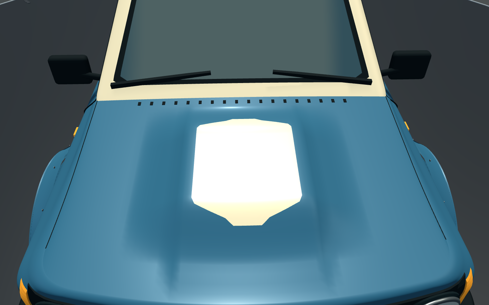
Before · Compatibility 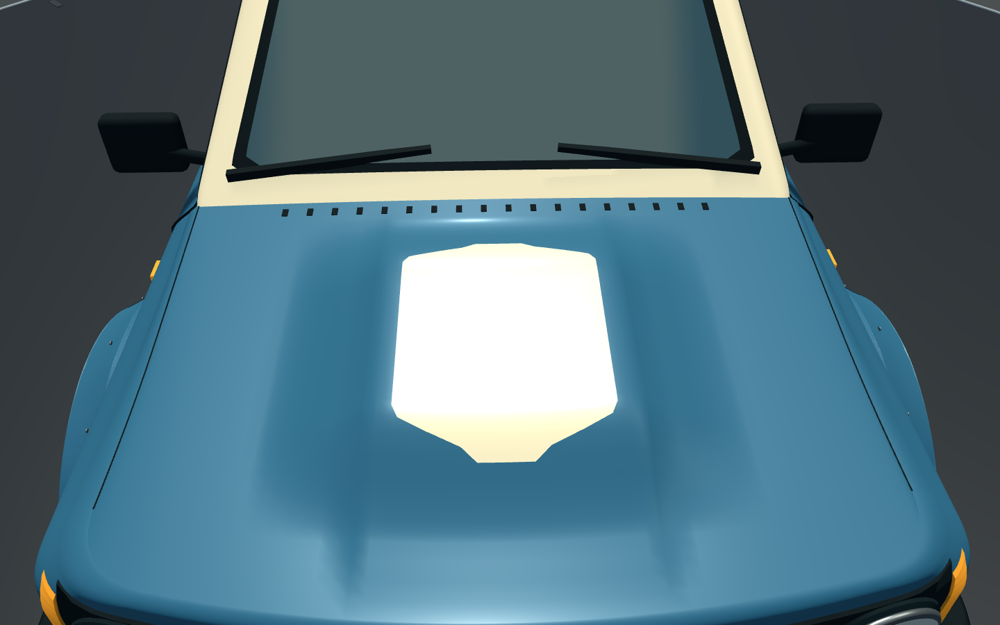
After · Compatibility full roof lip full vented front full vented insert 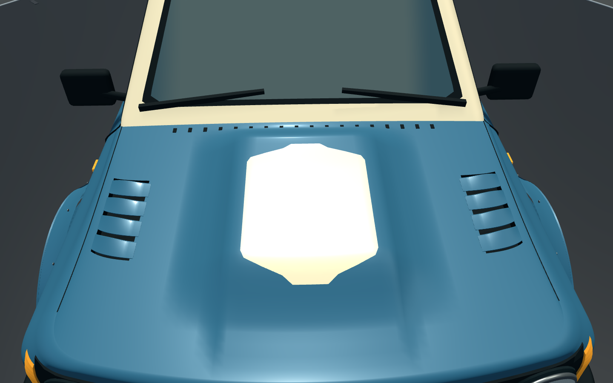
Before · Compatibility 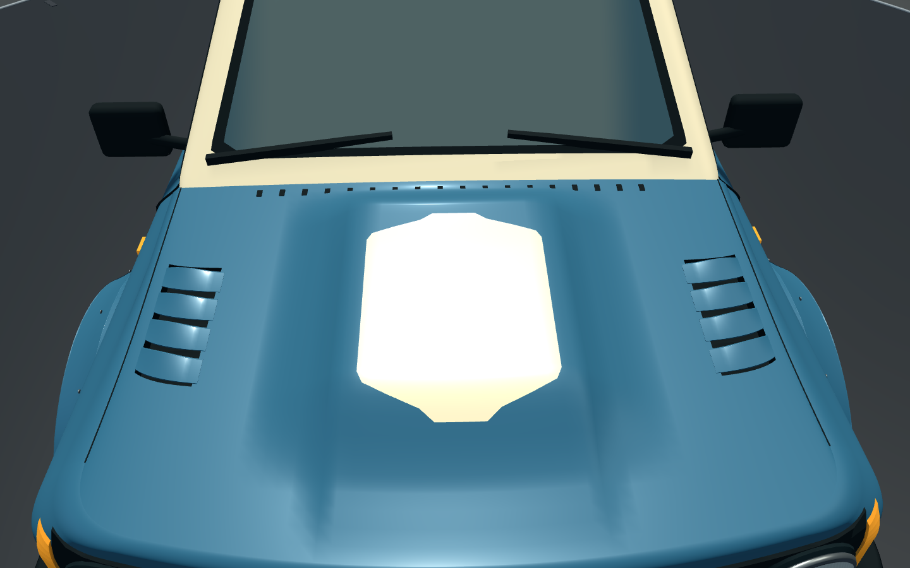
After · Compatibility heritage arch 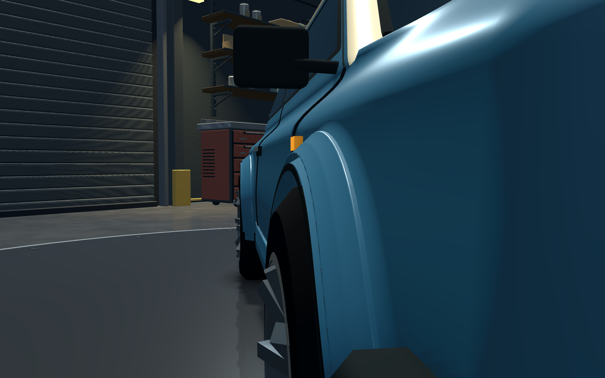
Before · Compatibility After · Compatibility rally arch 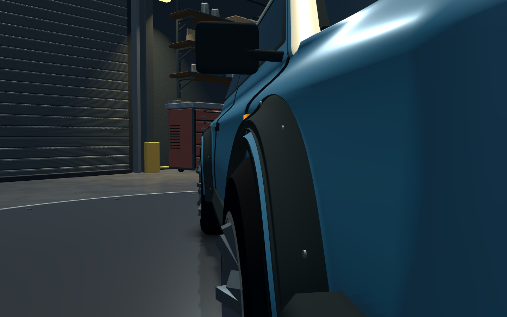
Before · Compatibility After · Compatibility roof lip side 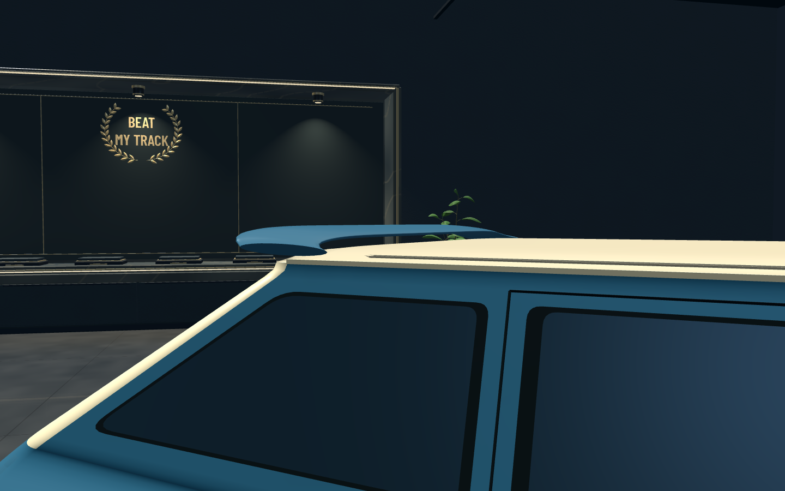
Before · Compatibility After · Compatibility simple arch 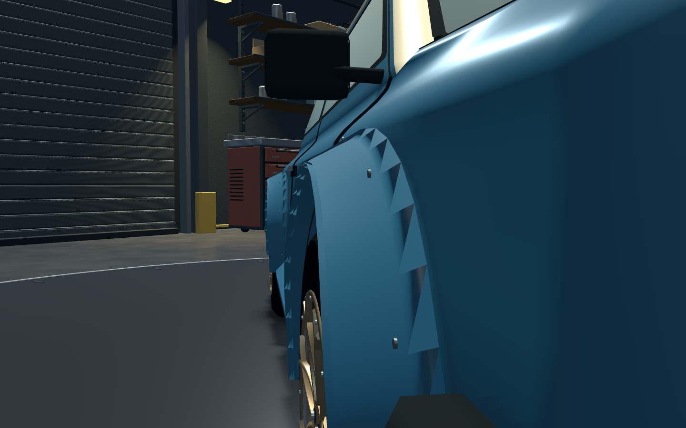
Before · Compatibility 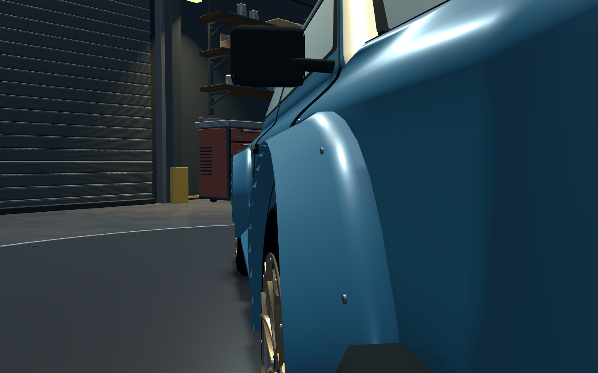
After · Compatibility simple dome front Before · Compatibility After · Compatibility simple dome insert 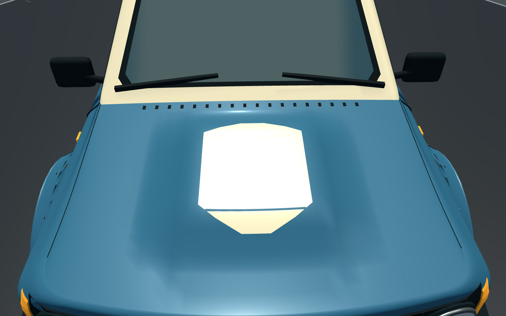
Before · Compatibility 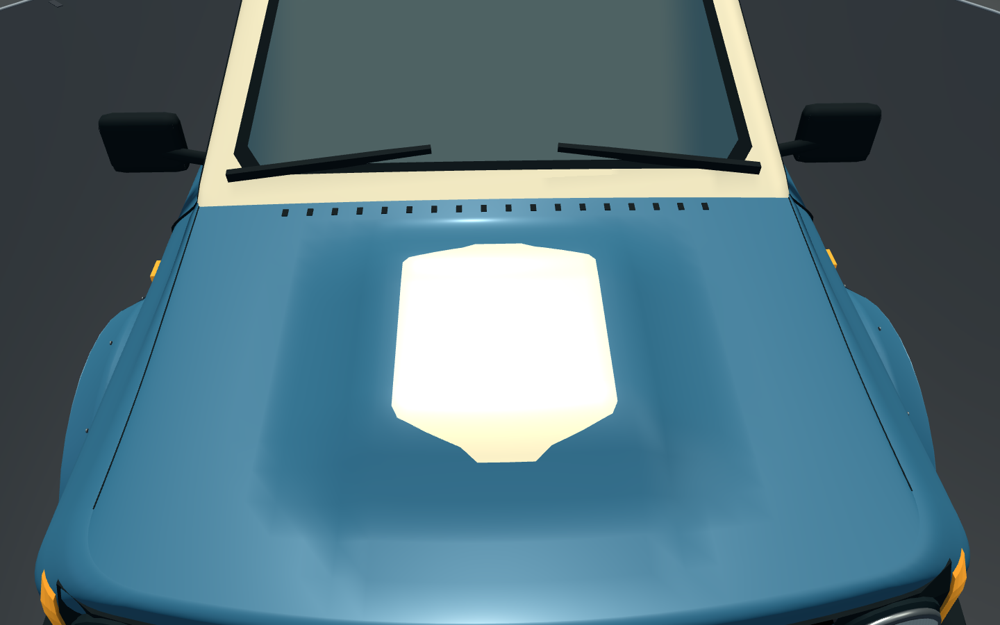
After · Compatibility simple roof lip simple vented front Before · Compatibility After · Compatibility simple vented insert wide arch 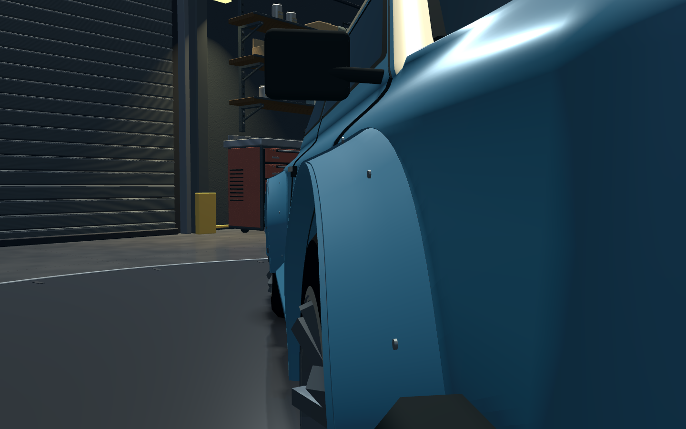
Before · Compatibility 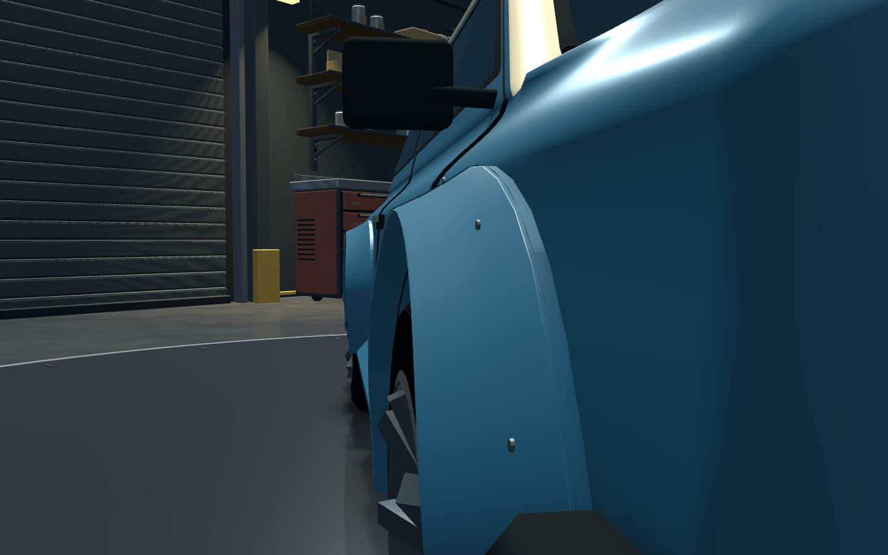
After · Compatibility